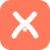

Concept 1 · The x Mustache
A tight, confident x lettermark. The two strokes
extend past the crossing point and curl upward at the baseline — the waxed
tips of a mustache. Reads as a clean, modern x at a glance.
Concept 2 · The Dot Curl
The x lettermark sits above a thin coral swash
that reads as a domain underline. The . separator lives in the
swash. Elegant, editorial — the dot-as-accent leads the eye.
Concept 3 · Bracket Mustache
The most overtly "dev" option: a terminal / CLI aesthetic.
Two mirrored chevrons frame a coral prompt dot, with a cursor underscore.
Reads as >_< code brackets around a cursor.
Concept 4 · Ligature x
The most solid / app-icon-ready option: a filled coral tile
with a knocked-out x. The strokes are gently bowed rather than
straight, so the lower half of the x silhouettes a mustache in
the negative space. Scales cleanly to a favicon.
